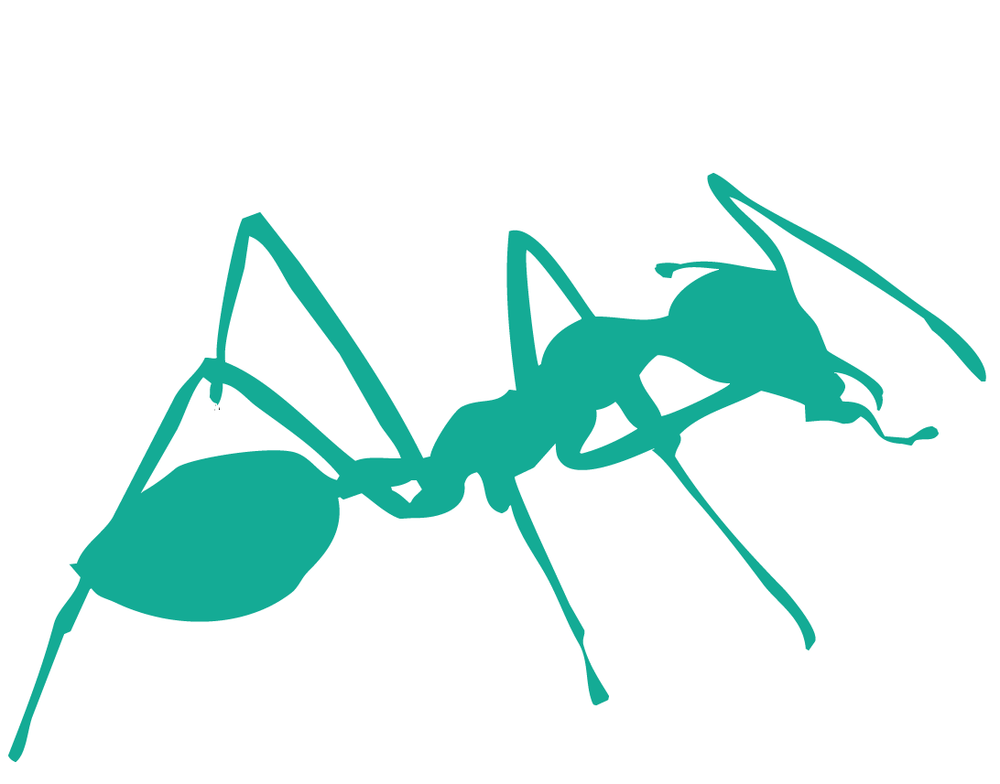

Hello!

Solve. Visualise. Understand.
Welcome to Mathgabs, my fellow Math-ants, Hope you are having a good day, this is the place to find, solve and understand mathematics. Mathgabs gives you analytical solutions to differential equations, perform circuit simulations, and plots complex math functions all rendered beautifully, step by step, completely free.
Open ODE Solver